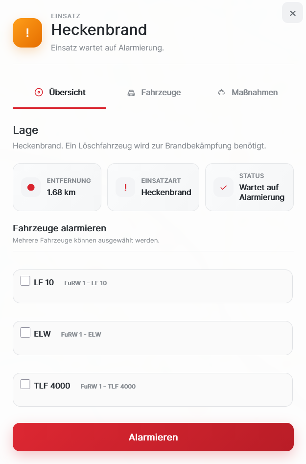
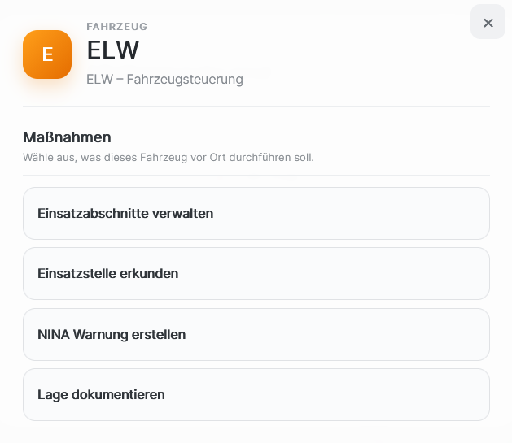
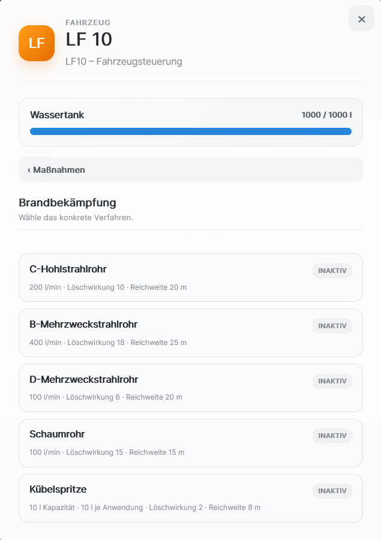

01 · EINSATZ
Erst die Lage. Dann die Entscheidung.
Die Einsatzansicht zeigt nicht nur einen Einsatzpunkt. Sie gibt dir die Informationen, die du für deine erste Entscheidung brauchst.

VEYRO ist ein modernes Leitstellenspiel, das gemeinsam mit einer Community entsteht. Baue deine Wachen auf, verwalte Fahrzeuge, bearbeite Detaillierte Einsatzlagen und triff die richtigen Entscheidungen – direkt aus deiner Leitstelle.
Die Oberfläche soll nicht nur gut aussehen. Sie soll sichtbar machen, was einen Einsatz wirklich ausmacht: Lage, Fahrzeuge und konkrete Maßnahmen.
Einsatz wartet auf Alarmierung.
Mülleimerbrand. Ein Löschfahrzeug wird zur Brandbekämpfung benötigt.
Die Einsatzansicht zeigt nicht nur einen Einsatzpunkt. Sie gibt dir die Informationen, die du für deine erste Entscheidung brauchst.

Vor Ort entscheidest du, welche konkrete Maßnahme durchgeführt wird – und bei manchen Maßnahmen sogar, welches Verfahren zum Einsatz kommt.

Wassertank, Ausstattung und verfügbare Maßnahmen sind Teil des Fahrzeugs – nicht nur dekorative Informationen.

VEYRO soll nicht einfach nur ein weiteres Spiel sein. Die Idee ist, eine Plattform zu schaffen, bei der Spieler, Entwickler und Interessierte gemeinsam an einer modernen Leitstellen-Erfahrung arbeiten.
Übernimm die Kontrolle und koordiniere Detaillierte Einsatzlagen aus einer übersichtlichen, modernen Leitstellen-Oberfläche.
Von alltäglichen Notfällen bis zu größeren Einsatzlagen: Entscheidungen sollen einen echten Unterschied machen.
Baue deine Infrastruktur auf, stelle Fahrzeuge bereit und entwickle deine eigene Einsatzstrategie.
Alarmiere die passenden Einheiten, koordiniere Maßnahmen und behalte auch bei komplexen Lagen den Überblick.
Klare Informationen, wenig Ablenkung und ein Interface, das sich anfühlt wie eine echte digitale Leitstelle.
Feedback, Ideen und Diskussionen sollen ein wichtiger Teil der Entwicklung von VEYRO sein.
VEYRO befindet sich noch in der Entwicklung. Genau deshalb ist jetzt der richtige Zeitpunkt, Teil der Community zu werden.
Viele Dinge sind noch im Aufbau. Features können sich verändern, neue Ideen kommen dazu und nicht alles ist bereits final. Genau diese Phase wollen wir gemeinsam mit der Community gestalten.
VEYRO ist noch nicht fertig. Aber genau das macht den Moment spannend: Werde Teil der Community und erlebe, wie aus einer Idee ein Spiel wird.